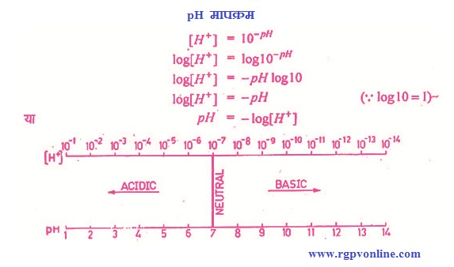

Q.23 : विलयन की pH से आप क्या समझते हैं ?
उत्तर – किसी विलयन में उपस्थित हाइड्रोजन आयनों की ग्राम-आयन प्रति लिटर मात्रा उस विलयन की हाइड्रोजन आयन सान्द्रता कहलाती है। चूंकि यह मान बहुत कम होता है। इसलिए pH के रूप में व्यक्त किया जाता है। किसी जलीय विलयन का pH मान उसमें उपस्थित हाइड्रोजन आयनों के ग्राम प्रति लिटर में 10 के आधार में व्यक्त सान्द्रण के ऋणात्मक घात का संख्यात्मक मान होता है।

चित्र 8.1 pH मापक्रम
अतः pH मान हाइड्रोजन आयन के सान्द्रण के व्युत्क्रम का लघुगुणक है। जिस विलयन.का pH मान 7 से कम होता है वह विलयन अम्लीय तथा जिसका pH मान 7 से अधिक होता है वह क्षारीय एवं जिस विलयन का pH मान 7 होता है वह उदासीन विलयन होता है। किसी विलयन में pH तथा pOH का कुल मान 14 होता है।
उदाहरण के लिए एक विलयन जिसका हाइड्रोजन आयन सान्द्रण 0.005 ग्राम तुल्यांक प्रति लिटर है, उसका pH मान,
pH = – log [H+]
= – log 0.005
= – (-2.301)
= 2–301
अतः pH = 2.301